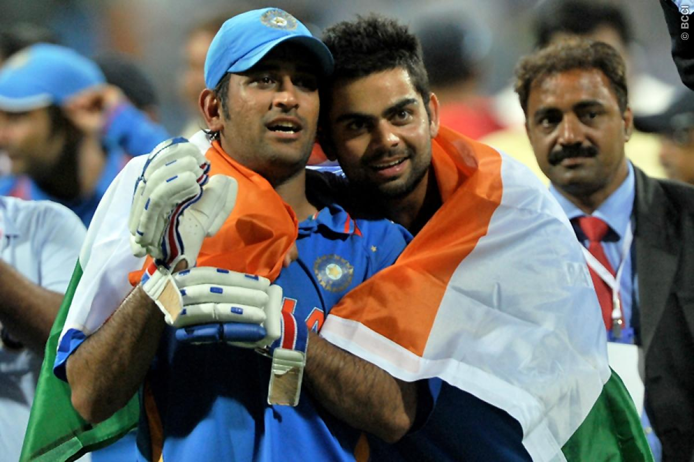

Press Releases
Team India probables for ICC CWC 2015 announced
The 30-member list features Samson, Manish and Kuldeep

The biggest news is that 5 heroes (Yuvraj Singh, Gautam Gambhir, Virendra Sehwag, Zaheer Khan, Harbhajan Singh) from World Cup 2011 has not selected for upcoming World  Cup that starting from february 2015.
MEDIA RELEASE
The All-India Senior Selection Committee met in Mumbai today and selected the probables for the Indian team to represent at the ICC Cricket World Cup to be played in Australia / New Zealand in Feb - March 2015
THE 30 PROBABLES ARE AS FOLLOWS
MS Dhoni, Shikhar Dhawan, Rohit Sharma, Ajinkya Rahane, Robin Uthappa, Virat Kohli, Suresh Raina, Ambati Rayudu, Kedar Jadhav, Manoj Tiwary, Manish Pandey, Wriddhiman